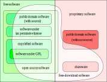

Open source licensing
Or: how I learned to stop worrying and love openness
May 30, 2024
A note on Richard Stallman
- Richard Stallman has been heavily criticised for some of this views
- He is hard to ignore when talking about open source so I am going to talk about him
- Nothing in this talk should be read as endorsing any of his comments outside (or inside) the world of open source
The origin of open source
- In the 50s and 60s source code was routinely shared with hardware and users were often expected to modify to run on their hardware
- By the late 1960s the production cost of software was rising relative to hardware and proprietary licences became more prevalent
- In 1980 Richard Stallman’s department at MIT took delivery of a printer they were not able to modify the source code for
- Richard Stallman launched the GNU project in 1983 to fight for software freedoms
- MIT licence was launched in the late 1980s
- Cathedral and the bazaar was released in 1997 (more on which later)
What is open source?
Think free as in free speech, not free beer (Stallman)
- Open source does not mean free of charge! Software freedom implies the ability to sell code
- Free of charge does not mean open source! Many free to download pieces of software are not open source (Zoom, for example)
By Chao-Kuei et al. - https://www.gnu.org/philosophy/categories.en.html, GPL, Link
The four freedoms
- Freedom 0: The freedom to use the program for any purpose.
- Freedom 1: The freedom to study how the program works, and change it to make it do what you wish.
- Freedom 2: The freedom to redistribute and make copies so you can help your neighbor.
- Freedom 3: The freedom to improve the program, and release your improvements (and modified versions in general) to the public, so that the whole community benefits.
Cathedral and the bazaar
- Every good work of software starts by scratching a developer’s personal itch.
- Good programmers know what to write. Great ones know what to rewrite (and reuse).
- Plan to throw one [version] away; you will, anyhow (copied from Frederick Brooks’s The Mythical Man-Month).
- If you have the right attitude, interesting problems will find you.
- When you lose interest in a program, your last duty to it is to hand it off to a competent successor.
- Treating your users as co-developers is your least-hassle route to rapid code improvement and effective debugging.
- Release early. Release often. And listen to your customers.
- Given a large enough beta-tester and co-developer base, almost every problem will be characterized quickly and the fix obvious to someone.
- Smart data structures and dumb code works a lot better than the other way around.
- If you treat your beta-testers as if they’re your most valuable resource, they will respond by becoming your most valuable resource.
Cathedral and the bazaar (cont.)
- The next best thing to having good ideas is recognizing good ideas from your users. Sometimes the latter is better.
- Often, the most striking and innovative solutions come from realizing that your concept of the problem was wrong.
- Perfection (in design) is achieved not when there is nothing more to add, but rather when there is nothing more to take away. (Attributed to Antoine de Saint-Exupéry)
- Any tool should be useful in the expected way, but a truly great tool lends itself to uses you never expected.
- When writing gateway software of any kind, take pains to disturb the data stream as little as possible—and never throw away information unless the recipient forces you to!
- When your language is nowhere near Turing-complete, syntactic sugar can be your friend.
- A security system is only as secure as its secret. Beware of pseudo-secrets.
- To solve an interesting problem, start by finding a problem that is interesting to you.
- Provided the development coordinator has a communications medium at least as good as the Internet, and knows how to lead without coercion, many heads are inevitably better than one.
The disciplines of open source are the disciplines of good data science
- Meaningful README
- Meaningful commit messages
- Modularity
- Separating data code from analytic code from interactive code
- Assigning issues and pull requests for action/ review
- Don’t forget one of the most lazy and incompetent developers you will ever work with is yourself, six months later
What licences exist?
- Permissive
- Such as MIT but there are others. Recommended by NHSX draft guidelines on open source
- Apache is a notable permissive licence- includes a patent licence
- In our work the OGL is also relevant- civil servant publish stuff under OGL (and MIT- it isn’t particularly recommended for code)
- Copyleft
- GPL2, GPL3, AGPL (“the GPL of the web”)
- Note that the provisions of the GPL only apply when you distribute the code
- At a certain point it all gets too complicated and you need a lawyer
- MPL is a notable copyleft licence- can combine with proprietary code as long as kept separate
- Arguments for permissive/ copyleft- getting your code used versus preserving software freedoms for other people
- Note that most of the licences are impossible to read! There is a website to explain tl;dr
What is copyright and why does it matter
- Copyright is assigned at the moment of creation
- If you made it in your own time, it’s yours (usually!)
- If you made it at work, it belongs to your employer
- If someone paid you to make it (“work for hire”) it belongs to them
- Crucially, the copyright holder can relicence software
- If it’s jointly authored it depends if it’s a “collective” or “joint” work
- Honestly it’s pretty complicated. Just vest copyright in an organisation or group of individuals you trust
- Goldacre review suggests using Crown copyright for copyright in the NHS because it’s a “shoal, not a big fish” (with apologies to Ben whom I am misquoting)
Iceweasel
- Iceweasel is a story of trademark rather than copyright
- Debian (a Linux flavour) had the permission to use the source code of Firefox, but not the logo
- So they took the source code and made their own version
- This sounds very obscure and unimportant but it could become important in future projects of ours, like…
What we have learned in recent projects
- The huge benefits of being open
- Transparency
- Working with customers
- Goodwill
- Nonfree mitigators
- Different licences for different repos
Software freedom means allowing people to do stuff you don’t like
- Freedom 0: The freedom to use the program for any purpose.
- Freedom 3: The freedom to improve the program, and release your improvements (and modified versions in general) to the public, so that the whole community benefits.
- The code isn’t the only thing with worth in the project
- This is why there are whole businesses founded on “here’s the Linux source code”
- So when we’re sharing code we are letting people do stupid things with it but we’re not recommending that they do stupid things with it
- People do stupid things with Excel and Microsoft don’t accept liability for that, and neither should we
- This issue of sharing analytic code and merchantability for a particular purpose is poorly understood and I think everyone needs to be clearer on it (us, and our customers)
- In my view a world where consultants are selling our code is better than a world where they’re selling their spreadsheets
“Open source as in piano”
- The patient experience QDC project
- Our current project
- Open source code is not necessarily to be run, but understood and learned from
- Building a group of people who can use and contribute to your code is arguably as important as writing it